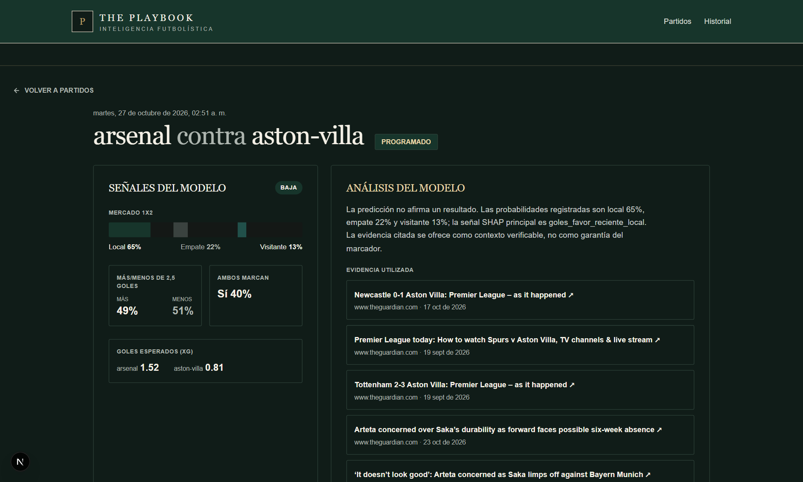

Predice. Explica. Publica su propio track record.
Equipo The-Playbook · Taller de Sistemas Inteligentes · SIS-352 · UCB «San Pablo» · Semestre 2-2026
lunes 26 de octubre de 2026
Rodrigo Rivera · Octavio Luna · Einar Guillen · Leandro Colque · Carolina Zeballos
| Integrante | Rol | Responsable de |
|---|---|---|
| Rodrigo Rivera | Product Owner y Scrum Master | Backlog, ceremonias, trazabilidad SDD, revisión de PRs |
| Octavio Luna | Backend-core | API, base de datos, worker y pipeline de la feature 001 |
| Leandro Colque | ML y track record | Modelos, evaluación y línea base (001); esquema de 003 |
| Einar Guillen | RAG / LLM | Ingesta de noticias, retrieval y explicación (002) |
| Carolina Zeballos | Frontend y ClickUp | Interfaz web (004) y tablero con la evidencia de tareas |
Roles vigentes del equipo al 26 de octubre de 2026.
Resultado 1X2, más/menos de 2.5 goles, ambos marcan y goles esperados (xG), con un badge de confianza calibrado.
Cada predicción se explica en lenguaje natural con evidencia verificable y temporalmente honesta.
El sistema publica su desempeño real frente a una línea base, para que cualquiera lo audite.
Cuatro features del MVP: 001 predicción · 002 explicación · 003 track record · 004 interfaz web
| GET /api/leagues | Ligas disponibles |
| GET /api/matches/upcoming | Próximos partidos |
| GET /api/matches/{id} | Detalle del partido |
| GET /api/matches/{id}/prediction | 4 señales + confianza |
| GET /api/matches/{id}/explanation | Explicación + evidencia citada |
| GET /health | Estado del servicio |
services
fecha_noticia < kickoff a nivel SQLHoy Claude Sonnet 4.6 en Bedrock · 5 evidencias citadas
| 1 | docker compose up -d postgres redis | Postgres 16 + pgvector y Redis |
| 2 | alembic upgrade head | Esquema versionado |
| 3 | python -m ml.data.demo_fixture --apply | Partido de demo con equipos del histórico |
| 4 | generate_predictions.delay() | Worker Celery entrena y persiste (~20 s) |
| 5 | python -m ml.evaluation.baseline_demo | Línea base, registrada en MLflow |
| Más / menos de 2.5 | 49 % / 51 % |
| Ambos marcan | Sí 40 % |
| xG | 1.52 — 0.81 |
| Confianza | Baja |
ensemble-2026-10-26Partido de demostración creado localmente con equipos del histórico, sin resultado. La confianza es baja por la muestra pequeña: es el comportamiento correcto.
| Mercado | Dixon-Coles | XGBoost | Ensamble | Ref. uniforme |
|---|---|---|---|---|
| 1X2 | 1.22 | 1.17 | 1.15 | 1.099 |
| Más/menos 2.5 | 0.76 | 0.98 | 0.82 | 0.693 |
| Ambos marcan | 0.78 | 0.67 | 0.69 | 0.693 |
64 partidos de entrenamiento y 20 de validación, una liga. Menor log-loss es mejor.
No afirmamos que supere al azar. Con 20 partidos las diferencias son ruido. La referencia es cálculo propio, no una línea base de mercado.
baseline_demo · w = 0.410 / 123 jobs en verde
| test_split_cronologico | Art. IV · sin fuga temporal |
| test_temporal_filter | Art. IV · SQL en pgvector real |
| test_no_odds_en_feature_set | Art. V · cuotas ≠ feature |
| pruebas de contrato | Art. IX · antes de implementar |
npm run audit:sdd en CI y tras cada edicióndevelop| Decisión | Por qué |
|---|---|
| API delgada + services | Art. I y VIII: ML y RAG aislados; el router no tiene lógica y todo se prueba por contrato |
| Postgres + pgvector | Art. IV y VII: un solo motor, y el filtro temporal va en SQL, no en memoria |
| Celery + Redis | Art. VI: nada pesado en el proceso HTTP; entrenar e indexar van al worker |
| Ensamble Dixon-Coles + XGBoost | Un modelo estadístico interpretable y otro de features; el peso se eligió por grilla (muestra pequeña) |
| Split cronológico, sin cuotas | Art. IV y V: ninguna parte usa información posterior a la predicción |
| RAG con Bedrock | Evidencia citada; el contenido scrapeado va delimitado como dato no confiable (Art. VI) |
| Qué se prueba | Dónde verlo |
|---|---|
| CI con 3 jobs | GitHub Actions · .github/workflows/ci.yml |
| Trazabilidad requisito ↔ tarea | npm run audit:sdd |
| Sin fuga temporal (Art. IV) | test_split_cronologico.py · test_temporal_filter.py |
| Cuotas fuera del modelo (Art. V) | test_no_odds_en_feature_set.py |
| Contratos de la API | backend/tests/contract/ |
| Frontend (55 pruebas) | frontend/tests · npm test |
| Línea base y experimentos | baseline_demo.py · mlflow ui |
| Specs, plan, tareas y ADR | specs/ · docs/adr/ · memory/constitution.md |